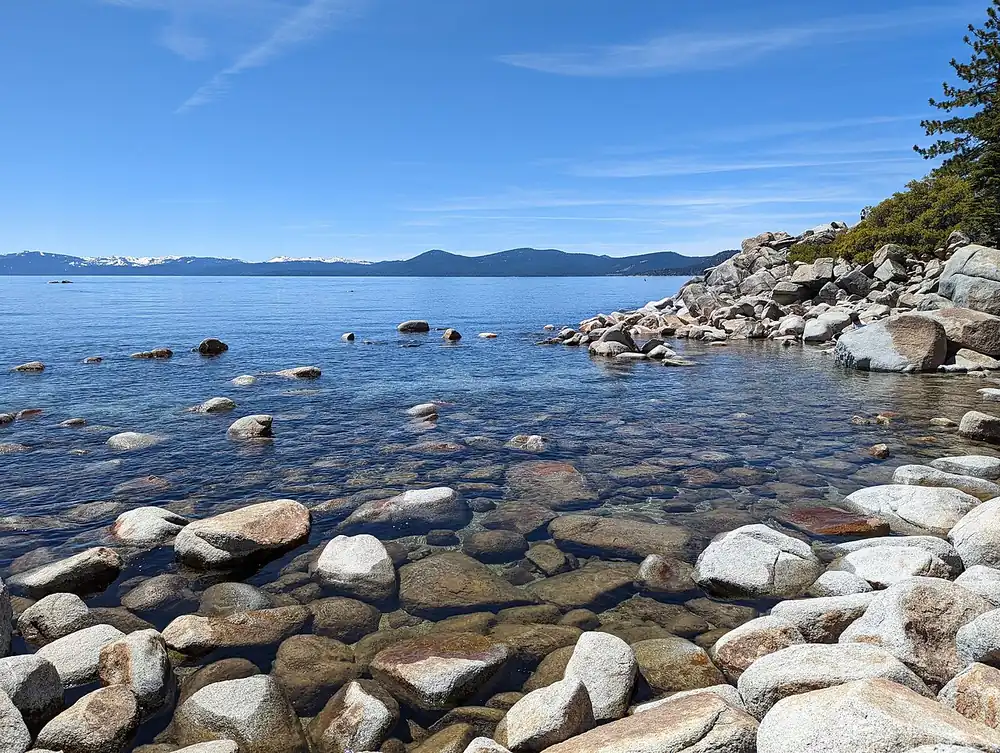

Sand Harbor — Lac Tahoe
Nevada, États-Unis · paddle, kayak, baignade

Petite anse de sable et de blocs de granit sur la rive nord-est du lac Tahoe, à près de 1 900 m d’altitude. L’eau est d’une transparence rare et les criques abritées se prêtent au paddle et au kayak par temps calme.
- Lieu
- Nevada, États-Unis
- Niveau
- Débutant
- Activités
- paddle, kayak, baignade
- Type d'eau
- lake
- Coordonnées
- 39.20, -119.93 (position approximative du secteur)
Dangers à connaître
- Eau froide même en plein été : risque d’hypothermie en cas de chute prolongée.
- Le vent se lève souvent l’après-midi et forme un clapot qui éloigne du bord.
- Blocs de granit juste sous la surface près des rochers.
Le conseil d'Ocean Buddy
Arrive tôt en été : le parking du parc d’État se remplit vite, puis profite du lac lisse du matin avant la brise de l’après-midi.
Ouvrir dans Ocean Buddy Télécharger sur l'App Store
Source : Fiche Ocean Buddy · septembre 2026 · à vérifier localement.